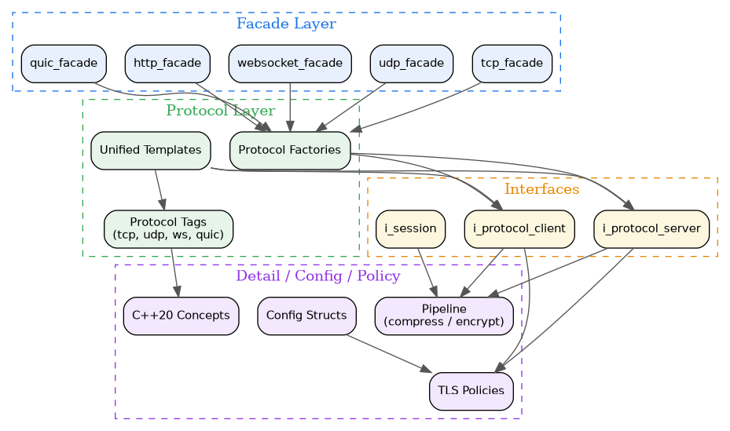

- Generated by
 1.12.0
1.12.0
|
Network System 0.1.1
High-performance modular networking library for scalable client-server applications
|
Network System is a high-performance, modular C++20 networking library for building scalable client-server applications. Built on ASIO non-blocking I/O with coroutine support, it provides a clean facade API over TCP, UDP, WebSocket, HTTP/2, QUIC, and gRPC protocols with pluggable TLS policies and pipeline-based message processing.
As the Tier 4 transport layer of the kcenon ecosystem, Network System depends on common_system, thread_system, and optionally container_system, logger_system, and monitoring_system.
| Category | Feature | Description |
|---|---|---|
| Protocols | TCP / UDP / WebSocket | Full-duplex, reliable and unreliable transports |
| Protocols | HTTP/2 / QUIC / gRPC | Modern multiplexed and RPC protocols |
| API | Facade Layer | tcp_facade, udp_facade, websocket_facade, http_facade, quic_facade with config structs |
| API | Unified Templates | unified_messaging_client<Protocol, TlsPolicy> / unified_messaging_server<Protocol, TlsPolicy> |
| API | Protocol Factories | protocol::tcp::connect(), protocol::tcp::listen() returning interface pointers |
| Security | TLS Policies | Policy-based TLS 1.2/1.3 configuration with OpenSSL 3.x |
| Performance | Pipeline Architecture | Pluggable compression/encryption hooks before async send |
| Performance | Connection Pooling | Efficient connection reuse and resource management |
| Concepts | C++20 Protocol Concept | Compile-time protocol tag constraints (name, is_connection_oriented, is_reliable) |
| Monitoring | EventBus Metrics | Zero compile-time dependency metric publishing via common_system EventBus |
The library is organized in layers. Higher layers depend on lower layers, but never the reverse. The facade layer provides simplified access to all protocol implementations.

A minimal TCP echo client using the facade API:
A minimal TCP echo server:
| Module | Directory | Description |
|---|---|---|
| Facade | include/kcenon/network/facade/ | Simplified protocol facades (tcp, udp, websocket, http, quic) hiding template complexity |
| Protocol | include/kcenon/network/protocol/ | Protocol factory functions and tag types |
| Interfaces | include/kcenon/network/interfaces/ | Core abstractions: i_protocol_client, i_protocol_server, i_session |
| Unified | include/kcenon/network/unified/ | unified_messaging_client/server<Protocol, TlsPolicy> templates |
| Detail | include/kcenon/network/detail/ | Implementation details: protocol tags, session types, metrics, tracing |
| Config | include/kcenon/network/config/ | Configuration types for clients, servers, and protocols |
| Policy | include/kcenon/network/policy/ | TLS policies (policy-based TLS configuration) |
| Concepts | include/kcenon/network/concepts/ | C++20 concepts constraining protocol tags |
| Core | src/core/ | messaging_client, messaging_server, connection_pool implementations |
| Internal | src/internal/ | Socket implementations (tcp, udp, websocket, quic, dtls, secure_tcp) |
| Libs | libs/ | Modular protocol libraries: network-core, network-tcp, network-udp, network-websocket, network-http2, network-quic, network-grpc, network-all |
| Example | Source | Description |
|---|---|---|
| TCP Client | tcp_client.cpp | Basic TCP client connecting to a server and sending messages |
| TCP Echo Server | tcp_echo_server.cpp | TCP server that echoes received messages back to clients |
| WebSocket Chat | websocket_chat.cpp | WebSocket-based chat application demonstrating bidirectional messaging |
| UDP Echo | udp_echo.cpp | Unreliable datagram echo demonstrating UDP transport |
| Connection Pool | connection_pool.cpp | Efficient connection reuse and lifecycle management |
| Observer Pattern | observer_pattern.cpp | Event-driven networking with observer callbacks |
New to Network System? Start with the tutorials below for a guided tour of the facade API, then keep the FAQ and troubleshooting guide handy as references during integration.
| Resource | Description |
|---|---|
| Tutorial: TCP Client and Server | TCP client and server walkthrough including session management and the echo pattern |
| Tutorial: WebSocket Chat Application | WebSocket chat application covering the upgrade handshake and message framing |
| Tutorial: Choosing the Right Protocol | Decision matrix and code samples for choosing between TCP, UDP, WebSocket, HTTP/2, and QUIC |
| Frequently Asked Questions | Frequently asked questions: connection drops, TLS, threading, performance, testing, and more |
| Troubleshooting Guide | Common runtime issues such as connect timeouts, TLS handshakes, leaks, and platform quirks |
Network System is the transport layer (Tier 4) of the kcenon ecosystem. It depends on lower-tier systems and is consumed by higher-tier applications:
| System | Tier | Relationship | Repository |
|---|---|---|---|
| common_system | 0 | Required dependency (Result<T>, IExecutor) | https://github.com/kcenon/common_system |
| thread_system | 1 | Required dependency (thread pool, async execution) | https://github.com/kcenon/thread_system |
| container_system | 1 | Optional dependency (serialization) | https://github.com/kcenon/container_system |
| logger_system | 2 | Optional dependency (runtime ILogger binding) | https://github.com/kcenon/logger_system |
| monitoring_system | 3 | Optional (EventBus metric subscriber) | https://github.com/kcenon/monitoring_system |
| pacs_system | 5 | Downstream consumer | https://github.com/kcenon/pacs_system |
| messaging_system | – | Downstream consumer | https://github.com/kcenon/messaging_system |
| database_system | 3 | Downstream consumer | https://github.com/kcenon/database_system |